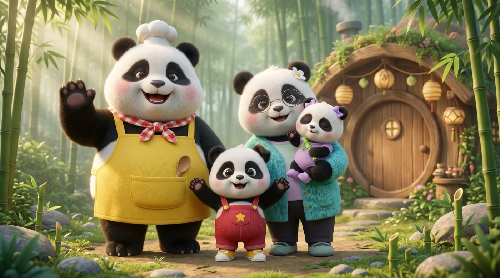

Bambu Tepesi'nde sevgi dolu bir panda ailesi
Puki ve ailesiyle paylaşmayı, duyguları ve günlük alışkanlıkları öğreten Türkçe çizgi filmler. Küçükler için sakin, sevimli ve güvenli.
Kanalımız ne anlatıyor?
Her bölümde 5 yaşındaki meraklı Puki, evde ve Bambu Tepesi'nde küçük bir soruyla karşılaşır. Ailesinin yardımıyla çözer; çocuğunuz da onunla birlikte öğrenir.
Duygular
Kıskançlık, sabır, paylaşmak, özür dilemek: duyguları adıyla tanımak.
Günlük alışkanlıklar
Diş fırçalamak, uyku saati, oyuncakları toplamak, el yıkamak.
Mutfak ve beslenme
Baba Bobi'nin eğlenceli mutfağında sebze ve meyveyle dostluk.
Şarkılar
Kolay sözlü, birlikte söylenecek neşeli Türkçe şarkılar.

Aileyle tanışın
Meraklı Puki, uykucu minik kardeşi Nini, sakin ve şefkatli Anne Lili ve mutfağı oyun alanına çeviren Baba Bobi.
Pandalar birbirine çok benzediği için her birinin kendine ait bir rengi ve kıyafeti var; küçükler onları ilk bakışta tanır.
Karakterleri görSon bölümler
Anne ve babalar için
Kanal kimin için, neyi amaçlıyor, ekran süresini nasıl destekliyoruz? Merak ettiklerinizi tek sayfada topladık.
Ebeveyn sayfası